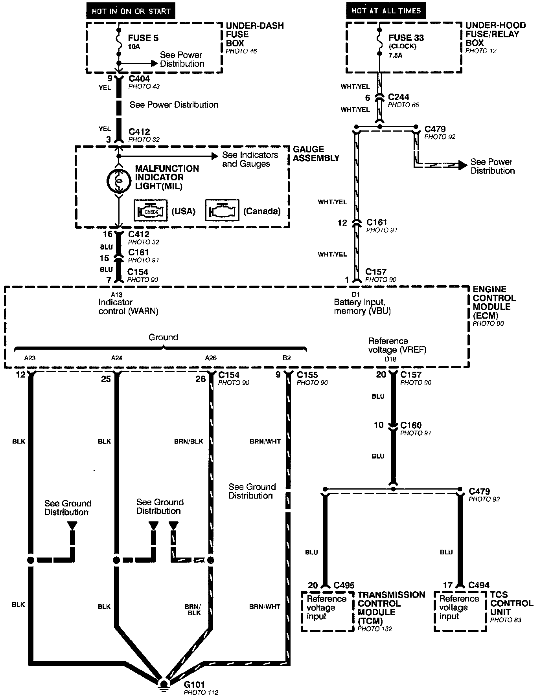
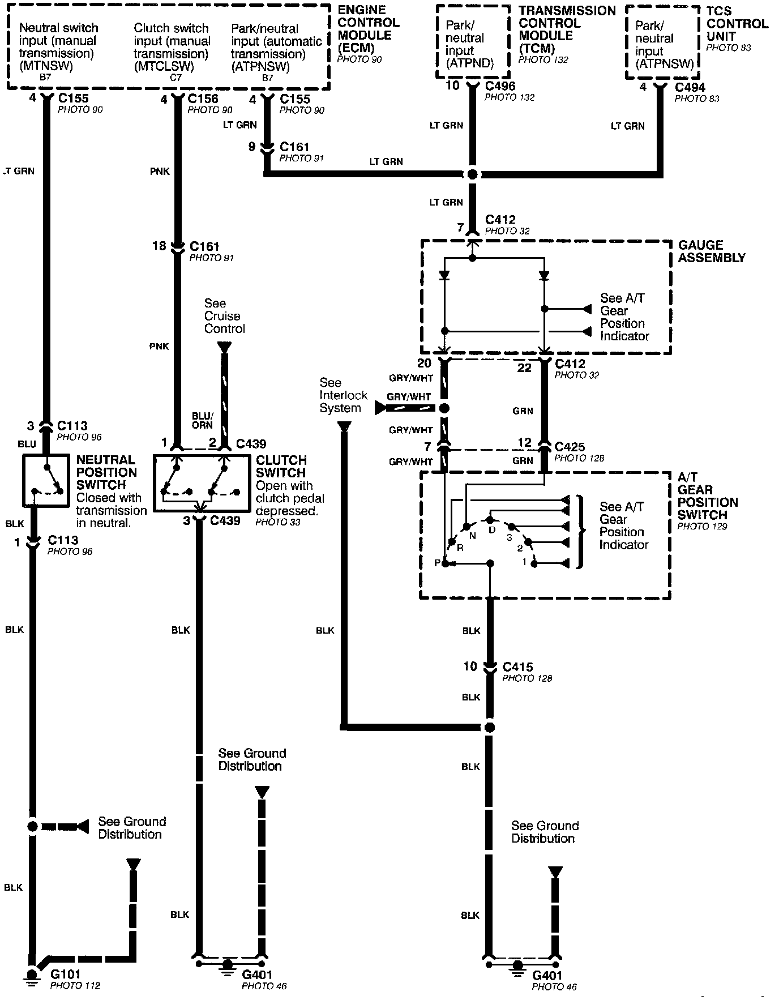

Engine and Vehicle Data Sensors & Malfunction Indicator Light
Programmed Fuel Injection System (PGM-FI) - Engine And Vehicle Data Sensors, And Malfunction Indicator Light (MIL) (Part 1 Of 2):

Programmed Fuel Injection System (PGM-FI) - Engine And Vehicle Data Sensors, And Malfunction Indicator Light (MIL) (Part 2 Of 2):
